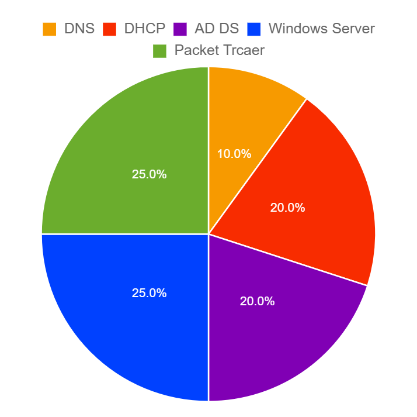
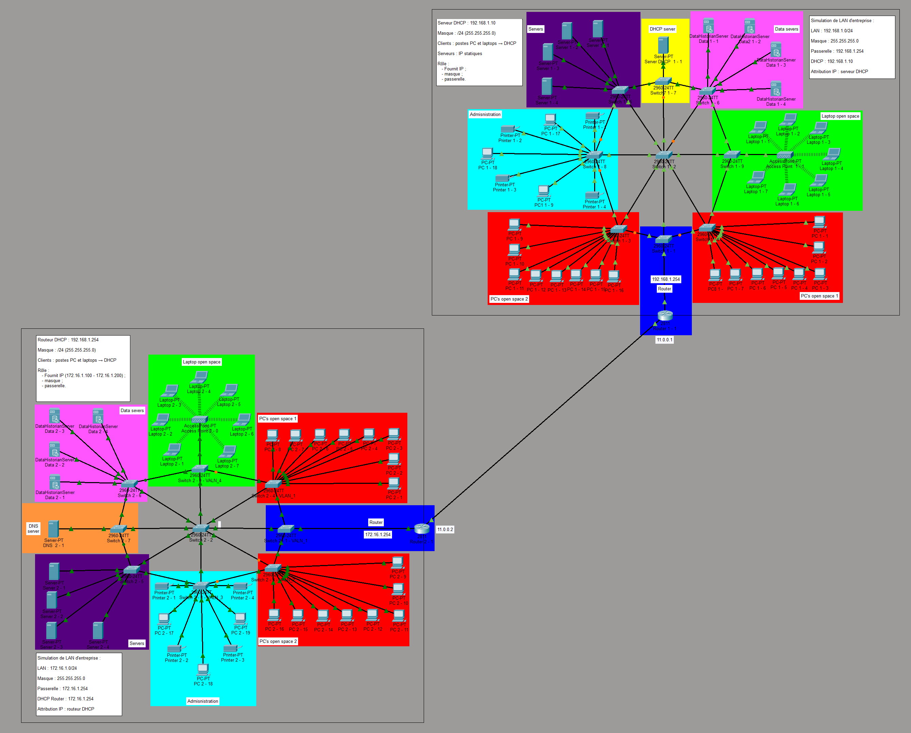

Déc. 2025 — en cours · Projet individuel ESIEA
Virtualisation réseau & Windows Server

Technologies utilisées
 Packet Tracer
Packet Tracer Win. Server
Win. Server AD DS
AD DS VMware
VMware DHCP
DHCP DNS
DNS
Réseau Cisco Packet Tracer
Réseau 1 — 192.168.1.0- Adressage IP géré dynamiquement par un serveur DHCP
- Adressage géré par le routeur
- 2 VLANs — OpenSpace1 et OpenSpace2
- Routage inter-VLAN configuré sur le routeur
- Serveur DNS servant d'annuaire réseau
VM Windows Server
Déploiement serveur- Installation de Windows Server sous VMware
- Création d'une forêt AD DS : TEST_foret_domain
- DNS intégré à l'annuaire Active Directory
- Création d'un dossier partagé pour les tests d'accès
Active Directory
Structuration en lien avec les VLANs- Une OU par VLAN — OpenSpace1, OpenSpace2, Administration…
- Des groupes de sécurité correspondant à chaque zone
- Des objets Ordinateur dans chaque OU pour simuler les postes clients
Gestion des permissions NTFS
Groupe DEV- Lecture, modification et suppression sur les dossiers DEV
- Accès en lecture seule sur les fichiers Administration
- Accès en lecture seule sur les fichiers DEV
- Contrôle total sur les dossiers Administration